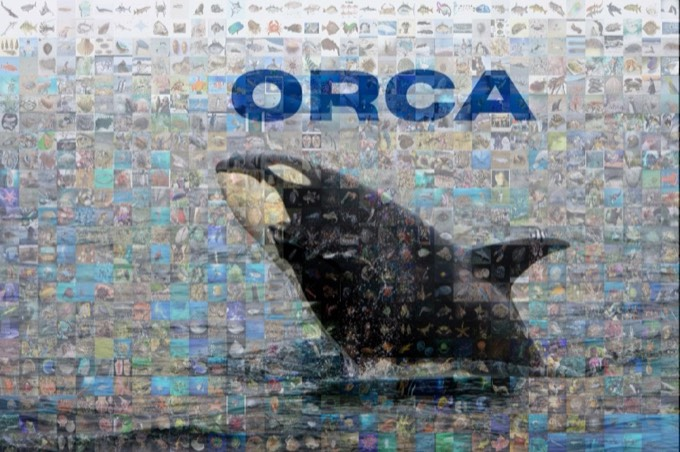

WACV 2026OralDetection · Grounding · Captioning
ORCA
Object Recognition and Comprehension for Archiving Marine Species
A species-level benchmark that pairs bounding boxes with instance-level, expert-verified captions, so models can be tested on detection, image grounding and captioning of marine life.
- Images
- 14,647
- Species
- 478
- Boxes
- 42,217